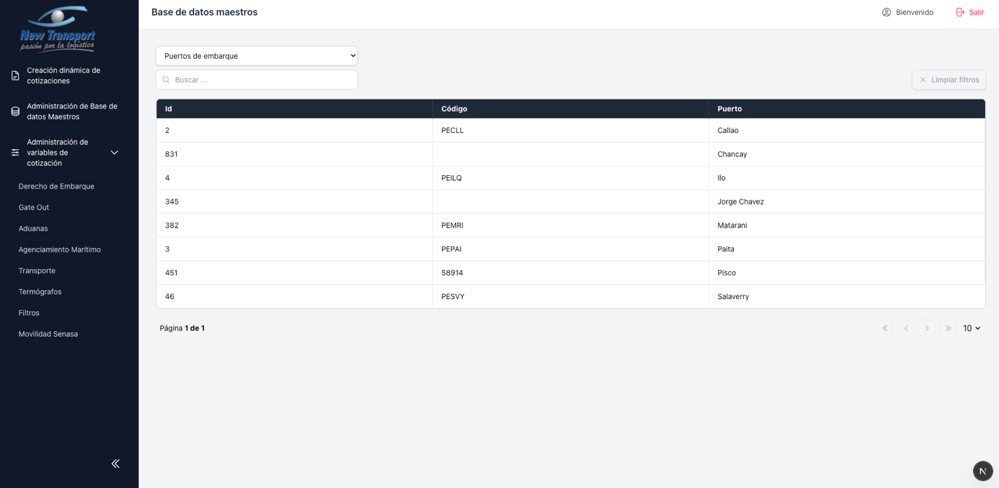
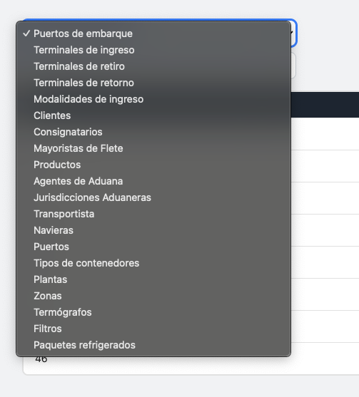
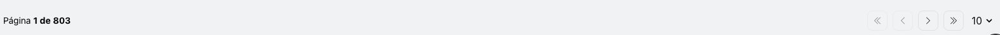

Base de Datos Maestros¶
El modulo de Administracion de Base de Datos Maestros permite consultar los catalogos de referencia que se utilizan en el proceso de cotizacion. Al ingresar, el sistema presenta por defecto el catalogo de Puertos de Embarque.
Catalogos Disponibles¶
| Catalogo |
|---|
| Puertos de embarque |
| Terminales de ingreso |
| Terminales de retiro |
| Terminales de retorno |
| Modalidades de ingreso |
| Clientes |
| Consignatarios |
| Mayoristas |
| Agentes de Aduana |
| Jurisdicciones de aduana |
| Transportistas |
| Navieras |
| Puertos |
| Tipos de contenedor |
| Plantas |
| Zonas |
| Termografos |
| Filtros |
| Paquetes refrigerados |

Funcionalidad¶
Seleccionar catalogo: mediante el selector en la parte superior de la pantalla.

Buscar por texto: mediante la barra de busqueda disponible en cada catalogo.
Navegar por paginas: el catalogo presenta los resultados paginados.

Note
Los catalogos maestros son de solo lectura desde este modulo. La administracion de los datos de referencia se realiza desde el backend del sistema.